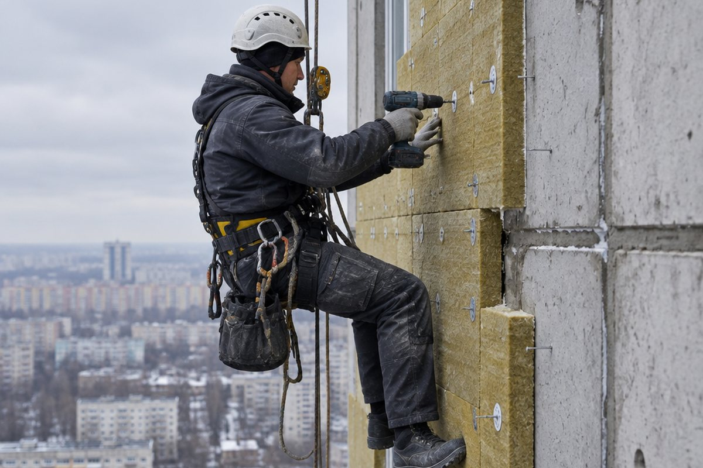

01
Утепление фасадов: стена не промерзает и не отсыревает
Утепляем стену, торец или отдельный участок с промерзанием. Плитный утеплитель крепится к основанию, армируется и закрывается отделочным слоем, поэтому точка росы уходит из бетона в утеплитель.
- Подготовка и очистка основания
- Плитный утеплитель и крепёж
- Армирование и штукатурный слой
- Окраска или фактурная отделка